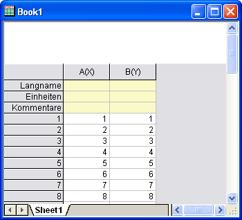
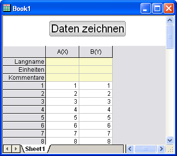

Organisieren und Zugreifen auf Origin C-Funktionen
Zusammenfassung
In diesem Tutorial wird erläutert, wie Sie Ihre Origin C-Funktionen aufrufen können.
Origin-Version mind. erforderlich: 8.0 SR0
Was Sie lernen werden
Dieses Tutorial zeigt Ihnen, wie Sie:
- Ihre Origin C-Funktion mit dem Projekt speichern,
- Ihre Programme mit visuellen Objekten verbinden,
- Ihre Origin C-Funktion mit Hilfe von Skript laden und kompilieren.
Ihre Origin C-Funktion mit dem Projekt speichern
Eine Möglichkeit, Ihre Origin C-Funktionen zu laden und zu kompilieren, besteht darin, die Origin C-Datei als Anhang an Ihre Origin-Projektdatei (*.OPJ) anzuhängen. Wenn eine Projektdatei geöffnet ist, werden alle angehängten Dateien, aussortiert und in einem temporären Ordner gespeichert. Zusätzlich wird jede angehängte Origin C-Datei auch automatisch in den Arbeitsbereich des Code Builders geladen und kompiliert. Die Funktion ist dann bereit, beim Öffnen der Origin-Projektdatei aufgerufen zu werden.
- Erstellen Sie eine neue Origin-Projektdatei, indem Sie auf die Schaltfläche Neues Projekt
 auf der Symbolleiste Standard klicken.
auf der Symbolleiste Standard klicken.
- Klicken Sie auf der Symbolleiste Standard auf die Schaltfläche Code Builder
 .
.
- Wählen Sie im Menü Code Builder die Option Datei: Neu. Dadurch öffnet sich das Dialogfeld Neue Datei.
- Wählen Sie im oberen Listenfeld C File.
- Geben Sie in dem Textfeld Dateiname Test ein und lassen Sie das Kontrollkästchen Zu Arbeitsbereich hinzufügen aktiviert. Klicken Sie auf OK. Die Datei Test.c wird zum Arbeitsbereich hinzugefügt.
- Wählen und kopieren Sie die folgende Funktion und fügen Sie sie in die Datei Test.c ein. Stellen Sie sicher, dass Sie den untenstehenden Text der Zeile ?//start your functions here? kopieren.
void Plot_Data(string strTemplate, string strData)
{
// Create a graph window from a Template
GraphPage gp;
BOOL bOK = gp.Create(strTemplate, CREATE_VISIBLE);
if( !bOK )
return;
// Attach the first layer (0) to a GraphLayer object
GraphLayer gl = gp.Layers(0);
//Attach a dataset to a Curve object
Curve crv(strData);
// Add the Curve to the graph layer
int nPlot = gl.AddPlot(crv);
if(nPlot >= 0)
{
// Set plot color to Green(2)
gl.DataPlots(nPlot).SetColor(2, TRUE);
// Rescale this graph layer
gl.Rescale();
}
}
Die Funktion Plot_Data hat zwei Argumente: (1) den Vorlagennamen und (2) den Namen eines Y-Datensatzes, der im Layer enthalten (gezeichnet) werden soll.
- Klicken Sie auf die Schaltfläche Erstellen , um die Datei zu kompilieren und zu verknüpfen.
- Fügen Sie die Datei Test.c per Drag&Drop aus dem Unterordnerverzeichnis User des Arbeitsbereichbaums in den Unterordner des Projekts ein. (Hinweis: Möglicherweise müssen Sie erst den Zweig des Unterordners User erweitern, um den Eintrag Test.c anzuzeigen, bevor Sie die Datei hinüberziehen können).
- Gehen Sie zurück zur Origin-Benutzeroberfläche und speichern Sie das Projekt durch Klicken auf die Schatfläche Speichern
 auf der Symbolleiste Standard. Geben Sie dem Projekt den Namen Test.OPJ und speichern Sie es an einem Speicherort Ihrer Wahl.
auf der Symbolleiste Standard. Geben Sie dem Projekt den Namen Test.OPJ und speichern Sie es an einem Speicherort Ihrer Wahl.
- Die Origin C-Datei Test.c wird jetzt mit dem Projekt gespeichert. Um dies zu überprüfen, schließen Sie das Projekt und gehen Sie zurück zum Code Builder. Sie werden sehen, dass es keine Einträge in dem Unterordner Project des Arbeitsbereichbaums gibt. Gehen Sie jetzt zurück zur Origin-Oberfläche und öffnen Sie das Projekt erneut. Gehen Sie zum Code Builder und überprüfen Sie, dass Test.c jetzt im Unterordner Project aufgeführt wird (Hinweis: Sie müssen möglicherweise den Zweig des Unterordners Project erweitern, um den Eintrag Test.c zu sehen).
Ihre Programme mit visuellen Objekten verbinden
Sie lernen, wie Sie in einem Arbeitsblatt eine Schaltfläche erstellen und die Schaltfläche so programmieren, dass sie die Origin C-Funktion in der Datei Test.c aufruft, die sie mit dem Projekt gespeichert haben.
- Öffnen Sie das Projekt Test.OPJ, das Sie in Schritt 9 (vorheriger Abschnitt) gespeichert haben.
- Markieren Sie die Spalten A(X) und B(Y), klicken Sie mit der rechten Maustaste und wählen Sie Spalte füllen mit: Zeilennummern.
- Wählen Sie Format: Worksheet, um das Dialogfeld Arbeitsblatteigenschaften zu öffnen.
- Setzen Sie auf der Registerkarte Größe den Zweig Abmessungen Arbeitsblatt bei Abstand von oben auf 40 und klicken Sie auf OK, um das Dialogfeld zu schließen.
- 
Das Arbeitsblatt hat jetzt ausreichend Platz über den Spaltenüberschriften, um eine Textbeschriftung hinzuzufügen.
Klicken Sie mit der rechten Maustaste in den Bereich direkt über den zwei Spalten und wählen Sie Text hinzufügen.
- Geben Sie beim Cursor Daten zeichnen ein.
- Klicken Sie einmal außerhalb der Textbeschriftung, damit diese nicht mehr ausgewählt ist.
- Klicken Sie mit der rechten Maustaste auf die Textbeschriftung und wählen Sie Programmablauf, um das Dialogfeld Programmablauf zu öffnen.(Hinweis: Wählen Sie bitte Eigenschaften Beschriftung in Origin 7.5.)
- Wählen Sie Mausklick aus der Auswahlliste Kriterien für Skriptausführung.
- Geben Sie den folgenden Text in das Textfeld unten im Dialogfeld ein.
Plot_Data("scatter","book1_b");
- Klicken Sie auf OK.
Ihre Textbeschriftung sieht jetzt aus wie eine Schaltfläche.
- 
- Klicken Sie auf die Schaltfläche Daten zeichnen in Ihrem Arbeitsblatt.
- Die Funktion Plot_Data in Ihrer Datei Test.c wird aufgerufen, ein Punktdiagramm wird gezeichnet.
| Hinweise: Das Skript hinter der Schaltfläche geht davon aus, dass sich Daten in Spalte B(Y) des Arbeitsblatts Data1 befinden und es einen verbundenen X-Datensatz gibt. |
Laden und Kompilieren Ihrer Origin C-Funktion mit Hilfe von LabTalk-Skript
In diesem Tutorial wurde erklärt, wie eine Origin C-Funktion mit einer Projektdatei gespeichert und dann von der Origin-Oberfläche aus auf die Funktion zugegriffen wird. Das Speichern einer Origin C-Datei mit einem Projekt beschränkt den Zugriff in dieser Datei auf ausschließlich dieses Projekt. Wenn ein neues Projekt geöffnet wird, sind die Funktionen nicht mehr verfügbar.
Um auf Funktionen in einer Origin C-Datei, die lokal gespeichert ist, zuzugreifen, kann die Datei programmatisch mit LabTalk-Skript geladen und kompiliert werden. Der Skriptbefehl zum Durchführen des programmatischen Ladens und Kompilierens lautet run.LoadOC. Weitere Informationen zur Verwendung dieses Befehls finden Sie in der Hilfe von LabTalk (Hilfe: Programmierung: Labtalk).
Damit ist das Tutorial Origin C-Funktionen abgeschlossen.